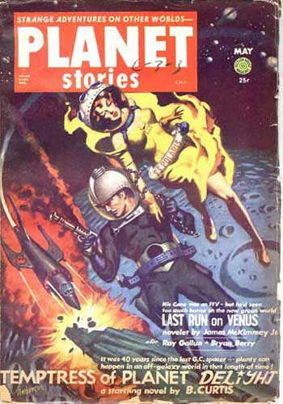
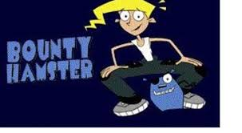

05-Apr-2017 | Milku
If I can’t rely on earth-bound hamsters as potential heroes, perhaps I should look to the skies.
Space hamsters are a rare breed, but they do exist.
The first ones I came across featured in the Philip K Dick short story The Infinites. The story focuses on a spaceship which is scouting asteroid fields for mining opportunities. After landing on an asteroid, the crew use a pack of hamsters to check the radiation levels outside... How cruel is that! Animal rights obviously wasn’t a priority in 1953 when the story was published in Planet Stories.
Not surprisingly, given the high radiation levels on the asteroid, the hamsters don’t fare too well and are lifeless when recovered by the crew. I had less sympathy when I read about the fate of the crew themselves, but I suppose you might be interested. They pass out, waking up days later with their hair and nails falling out, and their heads swelling in size. But at this stage, they still seem to be luckier than the hamsters. It turns out the humans have crammed millions of years of evolution into several days.
Blake, one of the crew members, wants them all to return to Earth and use their advanced intellects to take control. When the others don't agree, a fight ensues and Blake somehow generates a burst of energy that kills his team mate, Silvia. He turns to try to kill the Captain, Crispin Eller, but before he can do so, several large orbs of energy appear... Now, that’d send the Ghost Adventures Crew into overdrive. I’ve watched them get excited about tiny specks of light on the screen that just wiggle about a bit. Just look at any of their shows. Check out the Ghost Adventures website for details. These space energy orbs have the power to destroy Blake. And guess what? The orbs of energy are actually the irradiated hamsters. They evolved even more than the humans and became pure energy. They sound like my kind of guys. Powerful and no fur to wash!
But they stopped being hamsters per se so I continued my quest for a true hamster hero.
It led me to Bounty Hamster, which was an animated children’s TV series made in 2003. If you want to know more, check out the TV Tropes website In this show, a teenage girl, Cassie Harrison, is searching the universe for her father who has been kidnapped by space pirates. She needs help, but is on a budget, so can only afford to recruit a talking blue hamster called Marion. I was a bit cross, after all it suggests hamsters are cheap. But at least he is a professional bounty hunter.
I was impressed to find out that he was inspired by John Wayne. They share a name…no not “John’... Look it up! And Marion wears an eye patch just like John Wayne’s character in the film True Grit. For those of you who are concerned, the eyepatch was just for show. Marion had two perfect eyes.
Cassie might complain about Marion being clumsy or forgetful, but really he’s very handy to have around. (The biggest human in my house claims the same thing!) He can store many things in his cheeks for use in an emergency. (That's Marion and not my big human!) Marion even managed to pull a cruise ship out of his cheeks when he and Cassie were falling off a cliff.
Then he can growl! Don’t tell anyone, but I can only squeak a little.
Even so, some of the other characters in the programme call him 'cute'. But Marion is fierce in his defence of himself and this is when he utters his catchphrase "Don't call me CUTE!" before going berserk.
This is the ideal to which every fictional hamster should aspire. I’m going to try to emulate him as well. Not too sure I can get my paws on some blue fur dye though.